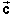
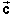
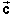

and
and  and the resultant displacement  = + with
their scalar components.
and the resultant displacement  = + with
their scalar components.
Yes, the direction angle q of the total displacement of the siskin is 296.3o measured in the positive sense relative to the east direction. This is the same as 63.7o south of east.
Solution. The diagram shows the two displacements
and and the resultant displacement  = + with
their scalar components.
The magnitudes of the two displacements are
a = 10 m  and
and  b = 12 m.
b = 12 m.
The directions of the two displacements are indicated in the diagram above.
The scalar components of the two vectors are equal to
ax = a cos q = 10 cos 30o = 8.66 m,
ay = a sin q = 10 sin 30o = 5.00 m,
and
bx = a cos q = 10 cos 240o = -6.00 m,
ay = a sin q = 10 sin 240o = -10.39 m.
Adding the x-components and the y-components separately gives the components of the resultant vector as
cx = ax + bx = 8.66 - 6.00 = 2.66 m,
cy = ay + by = 5.00 - 10.39 = -5.39 m.
A standard expression for the tangent of q (see Page 4 of Trig functions under Get Information) gives
tan q = cy / cx = -5.39 / 2.66 = -2.026 .
Because of the minus sign, q will be either in the second or fourth quadrant. We know from the diagram that it must be in the fourth quadrant. Depending on how a calculator is programmed, it may give one or the other result for q. E.g., it may give a value
q = -63.7o .
This is an angle in the fourth quadrant. Angles are always modulo 360o. Adding 360o to -63.7o gives 296.3o.
If you want to see how one can calculate the direction angle of the resultant of two vectors working only with magnitudes and angles and not using components, go to Vectors/Addition/Explain It/Add'n Quantitative. There is also an applet there that lets you practise vector addition for arbitrary vectors of your choice.